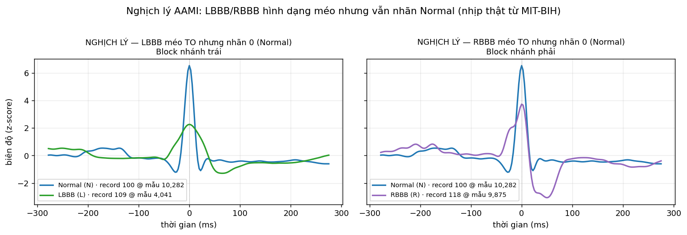

Phát hiện bất thường
nhịp tim ECG trên ESP32
Bối cảnh & bài toán
Bệnh tim mạch là nguyên nhân tử vong hàng đầu thế giới. Điện tâm đồ (ECG) ghi lại hoạt động điện của tim — một số nhịp bất thường (loạn nhịp) là dấu hiệu sớm và cần được phát hiện liên tục, kịp thời.
- Bài toán: xây mô hình học máy phát hiện nhịp tim bất thường từ tín hiệu ECG — phân loại nhị phân Bình thường / Bất thường.
- Ràng buộc cốt lõi: mô hình phải chạy ngay trên thiết bị biên (vi điều khiển ESP32 trong thiết bị đeo), không gửi dữ liệu lên cloud.
- Tại biên = tiết kiệm pin · độ trễ thấp · chạy cả khi mất mạng · bảo mật dữ liệu sức khoẻ
Ràng buộc bài toán
Chạy trên vi điều khiển + bối cảnh y tế đặt ra 4 ràng buộc cứng — mỗi ràng buộc có lý do riêng:
Phương pháp tiếp cận
Thành viên & phân công
Tín hiệu ECG là gì?
Bộ dữ liệu MIT-BIH Arrhythmia
Xử lý dataset — quy trình & lý do
Xử lý nhãn — gộp AAMI → nhị phân
| Siêu lớp AAMI | Ký hiệu gốc | Nhãn nhị phân |
|---|---|---|
| N (Normal) | N, L, R, e, j | 0 — Bình thường |
| SVEB | A, a, J, S | 1 — Bất thường |
| VEB | V, E | 1 — Bất thường |
| F (Fusion) | F | 1 — Bất thường |
| Q (Unknown) | /, f, Q | 1 — Bất thường |
Bài toán nhị phân: chỉ nhóm N (Normal) → 0, mọi siêu lớp loạn nhịp còn lại (SVEB · VEB · F · Q) → 1 (Bất thường).
Mốc phi-nhịp không phải một nhịp tim —
+ ~ | ! [ ] " x
(đổi nhịp · chất lượng tín hiệu · artifact · rung thất…) — đều bị loại, không gán nhãn 0/1.
Gộp về nhị phân giúp mô hình tí hon trên ESP32 tập trung vào một câu hỏi lâm sàng: bình thường hay bất thường?
Chia tập theo bệnh nhân — train · val · test
Chia hoàn toàn theo bản ghi (bệnh nhân) — chuẩn de Chazal, không shuffle toàn cục. Trộn ngẫu nhiên theo nhịp sẽ đưa nhịp cùng bệnh nhân vào cả train lẫn test, thổi phồng kết quả 5–10 pp.
- TRAIN — 19 bản ghi. Huấn luyện tham số cho cả 4 họ mô hình (class_weight balanced); đa dạng bệnh nhân để học mẫu tổng quát.
- VALIDATION — 3 bản ghi (207·209·215, patient-pure). Dò ngưỡng đạt recall ≥ 0.95 và chọn checkpoint CNN/LSTM — không đụng tập test.
- TEST · DS2 — 22 bản ghi. Bệnh nhân lạ chưa từng thấy → đo đúng khả năng tổng quát hóa.
- Loại 4 bản ghi máy tạo nhịp (paced) khỏi pipeline: 102 · 104 · 107 · 217.
Random Forest — thiết kế
n_estimators × max_depth, quét 6 mức từ 30 → 960 nút (n10_d3 … n80_d12).class_weight="balanced" bù mất cân bằng lớp; ngưỡng quyết định dò trên DS1-val để đạt recall ≥ 0.95.Random Forest — kết quả
| Cấu hình | Latency ms | Flash KB | Prec@0.95 ±std | Recall DS2 | Khả thi |
|---|---|---|---|---|---|
| n10_d3 | 1.0 | 2.9 | 0.110 ±0.00 | 0.78 ✗ | ✗ |
| n10_d5 | 1.0 | 12.0 | 0.127 ±0.01 | 0.78 ✗ | ✗ |
| n20_d6 | 1.2 | 42.4 | 0.122 ±0.01 | 0.78 ✗ | ✗ |
| n50_d10 | 4.9 | 458.7 | 0.117 ±0.00 | 0.78 ✗ | ✗ |
| n80_d12 | 9.1 | 1,005 | 0.116 ±0.00 | 0.78 ✗ | ✗ |
Nhận xét
- Cả họ bị loại: recall trên test (DS2) chỉ ~0.78 < 0.9 ở mọi cấu hình → ngưỡng dò trên DS1-val không chuyển được sang bệnh nhân lạ.
- Mô hình nhỏ nhất (n10_d5) cho precision cao nhất họ nhưng vẫn chỉ ~0.127 (PR-AUC 0.742) — tăng số nút không cải thiện, đường cong gần như phẳng.
- Gốc rễ: ngưỡng RF nhạy với phân phối đặc trưng theo bệnh nhân → trượt mạnh khi đổi tập, không đạt độ nhạy lâm sàng.
SVM — thiết kế
w·x + b chỉ 21 trọng số + 1 bias; quyết định = dấu của tích vô hướng — tuyến tính trong không gian đặc trưng.linear (1 vector trọng số) → rbf1k … rbf10k (≈ 10,000 SV).class_weight="balanced"; tham số C đánh đổi lề–lỗi; ngưỡng dò trên DS1-val.SVM — kết quả ⭐ quán quân
| Cấu hình | Latency ms | Flash KB | Prec@0.95 ±std | Recall DS2 | Khả thi |
|---|---|---|---|---|---|
| linear ★ | 1.0 | 0.2 | 0.193 ±0.00 | 0.92 ✓ | ✓ |
| rbf1k | 1.8 | 14.9 | 0.189 ±0.04 | 0.83 ✗ | ✗ |
| rbf4k | 9.3 | 39.0 | 0.181 ±0.01 | 0.82 ✗ | ✗ |
| rbf7k | 14.2 | 74.3 | 0.164 ±0.02 | 0.84 ✗ | ✗ |
| rbf10k | 17.4 | 93.9 | 0.182 ±0.02 | 0.80 ✗ | ✗ |
Vì sao thắng
- Quán quân toàn cục: svm_linear đạt precision trung bình cao nhất (0.193), std = 0 → hoàn toàn tái lập, không nhờ may mắn.
- Duy nhất qua cổng recall: chỉ svm_linear giữ recall DS2 0.92 ≥ 0.9; mọi biến thể RBF tụt còn 0.80–0.84 → bị loại.
- Nhỏ & đơn giản nhất: 21 trọng số · 0.2 KB · 1.0 ms · FPR thấp nhất (0.49).
1D-CNN — thiết kế
[Conv1D → BatchNorm → ReLU → MaxPool↓2]; kết thúc GlobalAvgPool → FC(1) → Sigmoid.c8-16 = 8 rồi 16 filter); receptive field nới rộng đủ phủ trọn phức QRS.c4 (~2K MACs) → c16-32-64-64 (~64K MACs).pos_weight ≈ 5.7 bù lệch lớp, early-stop theo F1 trên DS1-val, 5 seed (std lớn ±0.05).1D-CNN — kết quả
| Cấu hình | Latency ms | Flash KB | Prec@0.95 ±std | Recall DS2 | Khả thi |
|---|---|---|---|---|---|
| c4 | 0.9 | 0.1 | 0.146 ±0.03 | 0.97 ✓ | ✓ |
| c8 | 1.6 | 0.3 | 0.150 ±0.03 | 0.98 ✓ | ✓ |
| c8-16 ★ | 19.8 | 52.9 | 0.172 ±0.05 | 0.97 ✓ | ✓ |
| c16-32-32 | 99.7 | 131 | 0.157 ±0.02 | 0.96 ✓ | ✓ |
| c16-32-64-64 | 238.6 ✗ | 324 | 0.129 ±0.02 | 0.88 ✗ | ✗ |
Nhận xét
- Qua cổng recall thoải mái: recall DS2 0.96–0.98 ≥ 0.9 ở mọi cấu hình khả thi — ngưỡng chuyển sang bệnh nhân lạ rất tốt (nhưng PR-AUC chỉ 0.635).
- cnn_c8-16 tốt nhất họ với precision 0.172 — phương sai seed lớn (±0.05): một lần chạy may mắn ≠ chất lượng thật, phải lấy trung bình 5 seed.
- Biến thể lớn (c16-32-64-64) vượt 100 ms và recall DS2 0.88 < 0.9 → bị loại kép.
LSTM — thiết kế
FC(1) → Sigmoid; mỗi ô có 3 cổng điều tiết ô nhớ c_t.h4 → h32, cộng biến thể 2 lớp h32x2.h4 (~0.4K params, 3.4 ms) → h32x2 (2 lớp, 261 ms).LSTM — kết quả
| Cấu hình | Latency ms | Flash KB | Prec@0.95 ±std | Recall DS2 | Khả thi |
|---|---|---|---|---|---|
| h4 | 3.4 | 0.5 | 0.138 ±0.02 | 0.97 ✓ | ✓ |
| h8 ★ | 31.1 | 1.4 | 0.152 ±0.01 | 0.99 ✓ | ✓ |
| h16 | 15.4 | 4.9 | 0.138 ±0.01 | 0.99 ✓ | ✓ |
| h32 | 58.4 | 17.8 | 0.141 ±0.01 | 0.99 ✓ | ✓ |
| h32x2 | 261.6 ✗ | 50.8 | 0.145 ±0.01 | 0.98 ✓ | ✗ |
Nhận xét
- Chuyển ngưỡng tốt nhất toàn cục — recall DS2 0.97–0.99, qua cổng ≥ 0.9 ở mọi cấu hình (h32x2 chỉ trượt vì latency 262 ms).
- lstm_h8 tốt nhất họ (precision 0.152) — flash chỉ 1.4 KB, tiết kiệm nhất nhóm deep.
- PR-AUC thấp nhất (0.476) → khả năng tách lớp yếu hơn các họ khác.
So sánh tổng hợp — winner 4 họ
| Họ | Winner | Prec@.95 | FPR | PR-AUC | Trễ (ms) | Flash KB | Recall DS2 | Khả thi |
|---|---|---|---|---|---|---|---|---|
| RF | n10_d5 | 0.127 | 0.83 | 0.742 | 1.0 | 12.0 | 0.78 ✗ | ✗ |
| SVM | linear | 0.193 | 0.49 | 0.730 | 1.0 | 0.2 | 0.92 ✓ | ✓ |
| CNN | c8-16 | 0.172 | 0.63 | 0.635 | 19.8 | 52.9 | 0.965 ✓ | ✓ |
| LSTM | h8 | 0.152 | 0.66 | 0.476 | 31.1 | 1.4 | 0.987 ✓ | ✓ |
Quán quân toàn cục: SVM linear — precision trung bình cao nhất, nhanh nhất, nhỏ nhất, xác định, và giữ recall ≥ 0.9 trên test.
⚠ Cổng recall DS2 ≥ 0.9 loại toàn bộ RF (0.78) và SVM-RBF (0.80–0.84) · chỉ SVM linear sống sót trong nhóm feature · CNN/LSTM chuyển ngưỡng tốt nhưng precision thấp hơn & đắt hơn.
Chất lượng vs chi phí — “to hơn không tốt hơn”

Vì sao precision thấp (0.13–0.19)?
| Nguồn kéo precision xuống | Loại | Bỏ được không? |
|---|---|---|
| Mất cân bằng lớp (~11% bất thường) → trần precision bị chặn bằng toán học | Bản chất | Không |
| Chia theo bệnh nhân (inter-patient, de Chazal) — test là người chưa từng gặp | Bản chất | Không (bỏ = ăn gian) |
| Hai lớp chồng lấn sinh học: SVEB bất thường nhưng trông gần y hệt nhịp thường (xem slide sau) | Bản chất | Không |
| Nhãn L/R trong siêu lớp AMII N (Normal) bình thường nhưng hình dạng méo bất thường | Bản chất | Không |
| Ép recall ≥ 0.95 → hạ ngưỡng rất thấp → quét nhầm hàng loạt nhịp Normal | Ràng buộc (lâm sàng) | Không (yêu cầu an toàn) |
| Mô hình tí hon + 1 chuyển đạo MLII — giới hạn phần cứng ESP32 (không thể tăng size / thêm kênh) | Ràng buộc (phần cứng) | Không (ràng buộc đề bài) |
Hình dạng nhịp thật theo AAMI

